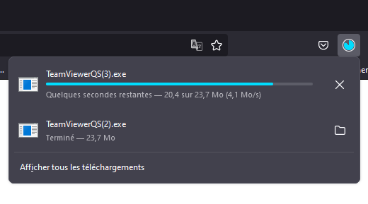
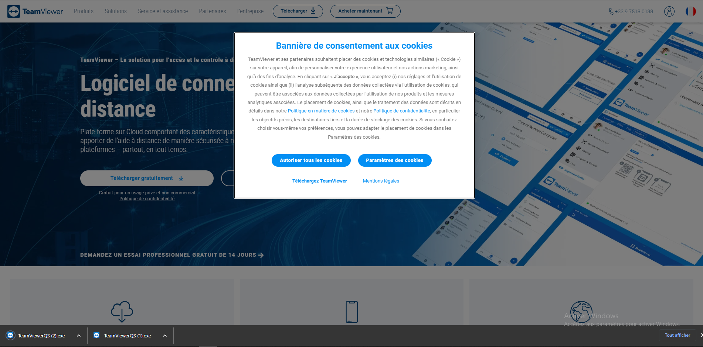
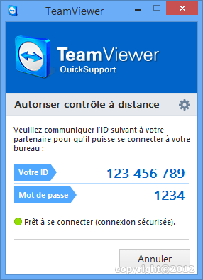

Détail du déroulement à distance
Il suffit de me contacter au 0661388374 ou par mail :
Cliquez ici
Nous convenons d’un rdv et le tours est joué.
Details :
Vous cliquez sur ce lien : ICI
• Ce qui se passe sur mozilla firefox :

• Ce qui se passe sur google chrome :

vous cliquez ensuite sur le fichier télécharger, c’est à dire celui de la popup.
Juste aprés avoir cliquez vous aurez une fenêtre de ce genre qui s’ouvre :

Et vous me donnez L’ID et le mots de passe.
Des lors le dépannages pourra commencé.
Pas si compliqué un dépannage à distance. En plus vous avez le déplacement en moins, des créneau plus attractif et une libérté durant le dépannges. Pour désactivé le contrôle à distance il vous suffit de fermé la fenetre avec la petites croix en haut à gauche.
Pas si compliqué !
Et vous vous pensés quoi ?